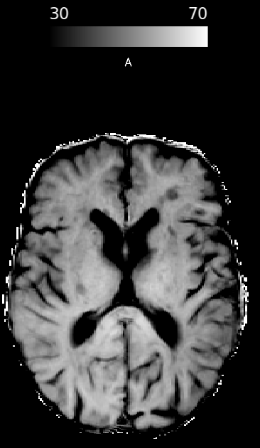

Mapas de razão de transferência de magnetização¶
Co-registro com imagens anatômicas¶
Antes do cálculo da taxa de transferência, costuma-se registrar os volumes de MT com uma imagem anatômica volumétrica (em geral T1)
Como nas outras análises, pode-se utilizar o flirt com 6 graus de liberdade, como:
flirt -in MT -ref ANAT -dof 6 -o MT_2_ANAT
Cálculo do MTR¶
Depois, basta usar os dois volumes co-registrados para calcular a taxa conforme
\[\frac{MT_{OFF} - MT_{ON}}{MT_{OFF}} * 100\]
Podemos fazer isso com o fslmaths ou qualquer outro programa com algo como:
fslmaths MTOFF -sub MTON -div MTOFF -mul 100 MTR
Com um resultado semelhante a este:
